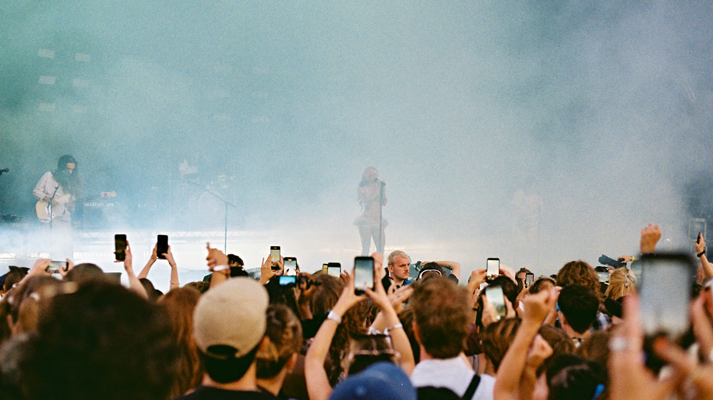

2025년 위켄즈 종무식, 제목이 들어가는 곳입니다. 2025년 위켄즈 종무식, 제목이 들어가는 곳입니다.
2023.01.01
내용이 들어가는 곳입니다. 관리자 에디터에서 작성한 내용이 들어갑니다. 하이퍼링크, 기울이기, 글자색 넣기 등 기본적인 편집이 가능한 에디터가 적용됩니다. 미션 내용이 들어가는 곳입니다. 관리자 에디터에서 작성한 내용이 들어갑니다.미션 내용이 들어가는 곳입니다. 관리자 에디터에서 작성한 내용이 들어갑니다.
내용이 들어가는 곳입니다. 관리자 에디터에서 작성한 내용이 들어갑니다. 하이퍼링크, 기울이기, 글자색 넣기 등 기본적인 편집이 가능한 에디터가 적용됩니다.미션 내용이 들어가는 곳입니다. 관리자 에디터에서 작성한 내용이 들어갑니다.미션 내용이 들어가는 곳입니다. 관리자 에디터에서 작성한 내용이 들어갑니다. 미션 내용이 들어가는 곳입니다. 관리자 에디터에서 작성한 내용이 들어갑니다.미션 내용이 들어가는 곳입니다. 관리자 에디터에서 작성한 내용이 들어갑니다.내용이 들어가는 곳입니다. 관리자 에디터에서 작성한 내용이 들어갑니다. 하이퍼링크, 기울이기, 글자색 넣기 등 기본적인 편집이 가능한 에디터가 적용됩니다.
내용이 들어가는 곳입니다. 관리자 에디터에서 작성한 내용이 들어갑니다. 하이퍼링크, 기울이기, 글자색 넣기 등 기본적인 편집이 가능한 에디터가 적용됩니다. 미션 내용이 들어가는 곳입니다. 관리자 에디터에서 작성한 내용이 들어갑니다.미션 내용이 들어가는 곳입니다. 관리자 에디터에서 작성한 내용이 들어갑니다. 미션 내용이 들어가는 곳입니다. 관리자 에디터에서 작성한 내용이 들어갑니다.미션 내용이 들어가는 곳입니다. 관리자 에디터에서 작성한 내용이 들어갑니다.
내용이 들어가는 곳입니다. 관리자 에디터에서 작성한 내용이 들어갑니다. 하이퍼링크, 기울이기, 글자색 넣기 등 기본적인 편집이 가능한 에디터가 적용됩니다. 미션 내용이 들어가는 곳입니다. 관리자 에디터에서 작성한 내용이 들어갑니다.미션 내용이 들어가는 곳입니다. 관리자 에디터에서 작성한 내용이 들어갑니다. 미션 내용이 들어가는 곳입니다. 관리자 에디터에서 작성한 내용이 들어갑니다.미션 내용이 들어가는 곳입니다. 관리자 에디터에서 작성한 내용이 들어갑니다.